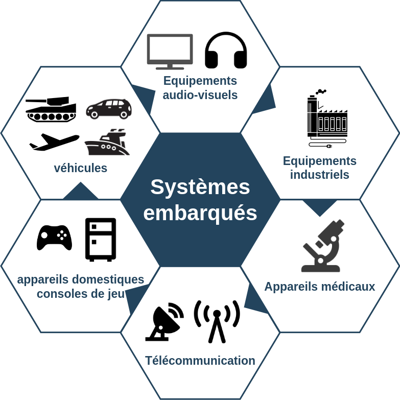
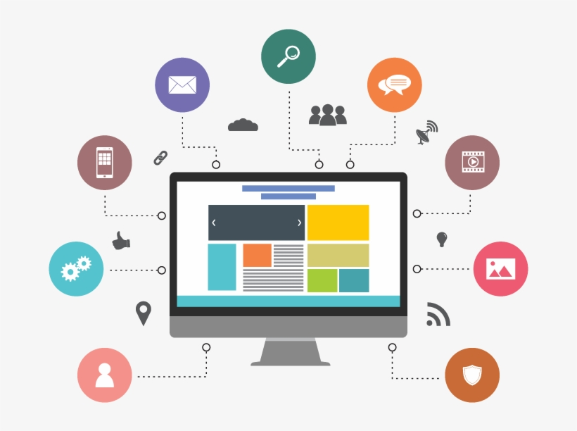

Maintenance Informatique
Service fréquement demander
Je suis passionné par la maintenance des systèmes informatiques, tant au niveau matériel que logiciel, ainsi que par la gestion et la fiabilité des réseaux. Mon objectif est d’assurer la maintenance préventive, corrective et conditionnelle des équipements informatiques afin de garantir leur bon fonctionnement, leur performance et leur durabilité. J’interviens dans le diagnostic des pannes, la résolution des incidents techniques et l’optimisation des systèmes, tout en veillant à répondre efficacement aux besoins des utilisateurs. Rigoureux et orienté résultats, je m’engage à maintenir des environnements informatiques stables, sécurisés et adaptés aux exigences professionnelles.
Systèmes embarqués
Service moyennement demander
Via l'audidactique j'intervient également dans le développement et l’intégration des systèmes embarqués (IoT), avec pour objectif de concevoir des solutions intelligentes capables d’interagir avec leur environnement. Je m’intéresse à la conception, à la programmation et à l’optimisation de dispositifs embarqués, en veillant à leur fiabilité, leur performance et leur efficacité énergétique. J’interviens dans l’analyse des besoins, la mise en œuvre de solutions techniques adaptées et l’amélioration continue des systèmes, tout en contribuant à la création d’environnements connectés innovants répondant aux exigences des usages modernes.

Application mobile et web
Service rarement demander
Dans cette logique, j’assure également le développement des interfaces applicatives et web nécessaires au pilotage, au suivi et à la communication des objets connectés, en mettant en place des solutions permettant une interaction efficace entre les utilisateurs et les dispositifs. Je veille à concevoir des interfaces intuitives, sécurisées et adaptées aux contraintes techniques des systèmes embarqués, tout en garantissant la fiabilité des échanges de données. Cette approche me permet d’assurer une intégration cohérente et performante entre le matériel, les systèmes embarqués et les solutions logicielles.
